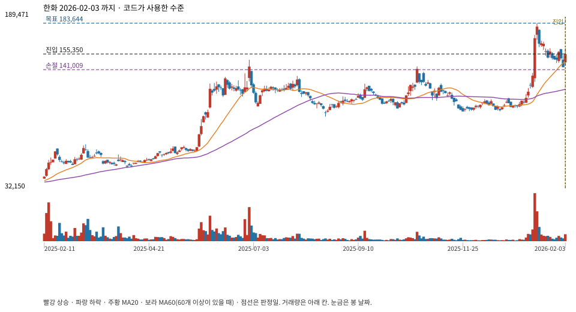

당일까지의 완료봉만 다시 넣었다. 불일치는 고치지 않고 기록한다. 눌림 시작 고점·저점은 코드가 저장하지 않아 정답처럼 표시하지 않는다.

{
"rising_structure": true,
"atr_valid": true,
"valid_zone": true,
"near_ma20": true,
"volume_contracted": true,
"recovery_close": true,
"bullish_candle": true,
"volume_recovery": true,
"fresh_confirmation": true
}| 창 | 날짜 | 봉 | 창 안 최저 | 창 안 최고 |
|---|---|---|---|---|
| 추세 비교 최근 20봉 | 2026-01-07 ~ 2026-02-03 | 20 | 저 2026-01-07 / 109604.859375 | 고 2026-01-15 / 183644.34375 |
| 추세 비교 직전 20봉 | 2025-12-05 ~ 2026-01-06 | 20 | 저 2025-12-18 / 102861.984375 | 고 2025-12-24 / 115157.8203125 |
| 근접 확인 직전 5봉 | 2026-01-27 ~ 2026-02-02 | 5 | 저 2026-02-02 / 143054.84375 | 고 2026-01-30 / 159978.140625 |
| 손절 기준 최근 10봉 | 2026-01-21 ~ 2026-02-03 | 10 | 저 2026-02-02 / 143054.84375 | 고 2026-01-23 / 160639.21875 |
| 목표 기준 마지막 봉 제외 20봉 | 2026-01-06 ~ 2026-02-02 | 20 | 저 2026-01-06 / 107489.453125 | 고 2026-01-15 / 183644.34375 |
| 거래량 기준 20봉 | 2025-12-30 ~ 2026-01-28 | 20 | 저 2026-01-02 / 105770.6796875 | 고 2026-01-15 / 183644.34375 |
| 눌림 거래량 3봉 | 2026-01-29 ~ 2026-02-02 | 3 | 저 2026-02-02 / 143054.84375 | 고 2026-01-30 / 159978.140625 |
| 확인 봉 | 2026-02-03 ~ 2026-02-03 | 1 | 저 2026-02-03 / 144773.609375 | 고 2026-02-03 / 159978.140625 |
MA20 149063.9359375 · 직전 MA20 138453.81484375 · ATR14 10227.6484 · 근접 기준 156734.6722375 · 손절 원값 141009.31407 · 목표 원값 183644.34375 · 거래량비 0.48460672544059
{
"final_status": "ready",
"final_ready": true,
"selected_pattern": "trend_pullback_v1",
"reason": "상승 추세 눌림 후 고점 회복 확인",
"context": {
"daily": "up",
"weekly": "up",
"weekly_bars": 225,
"weekly_asof": 1769754600,
"label": "주봉 상승 \/ 일봉 상승",
"warning": ""
},
"quality": {
"can_simulate": true,
"status": "warning",
"reasons": []
},
"features_risk": {
"spike_dump_status": "none",
"top_pattern_status": "watch",
"top_pattern_phase": "top_watch",
"playbook": {
"action": "wait",
"size_hint": "현금 유지 (지금 시장가 매수 아님)",
"rules": [
"레버\/인버스는 직접 사지 않고 본주 방향·차트 그림으로만 바꿔 대응",
"쫓아 사기 금지: 올라갈 때 사지 말고 내려올 때\/그림 회복만",
"사기 전에 손절선(최근 저점) 필수 기록",
"한 번에 현금 전액 금지, 나눠서 최대 3회",
"애매하면 지금은 안 삼",
"불법과외1: 수렴 돌파만 보고 추격 금지 — 돌파 후 윗구간 박스 확인",
"불법과외1: 선호캔들(장대양→도지→거래량없는장대음→장대양)은 매물대 돌파 후에만",
"고점판독: 돌파 실패→고점 하향→파동 중심·하단 시험→상승 추세선 이탈이면 신규 매수 금지",
"손절은 2단으로: 타이트=당일 저가, 넓게=여러 번 걸린 가로 매물대",
"익절은 2단으로: 1차=직전 고점, 2차=같은 폭을 위로 한 번 더(또는 그 사이 가로 저항)"
],
"reason": "000880.KS [account1]: 중간 점수(60). 지금은 안 삼 — 중간 가격대가 “지금 살 가격”이 아님",
"entry_zone": {
"low": 160179.1125,
"high": 173527.3719,
"mid": 166853.2422,
"rule": "half_retrace_±4%"
},
"invalidation": 150062.1406,
"target_hint": {
"price": 183644.3438,
"rule": "structure_swing_high",
"wide": 217226.5469,
"wide_rule": "measured_move_1x"
},
"blocked": false,
"profile": "account1"
}
}
}저장 진입·손절·목표와 재계산이 같다.
좌표 미기록: pullback_interval_start
{
"case_id": "08e8a5ee88e686d4",
"symbol": "000880.KS",
"session_date": "2026-02-03",
"recomputed_from": "ChartPlanEngine on completed bars through the signal day only",
"independent_strategy_implementation": false,
"quality": {
"can_simulate": true,
"status": "warning",
"reasons": []
},
"pullback": {
"version": "trend_pullback_v1",
"status": "ready",
"ready": true,
"reason": "상승 추세 눌림 후 고점 회복 확인",
"entry": 155350,
"stop": 141009,
"target": 183644,
"reward_risk": 1.973,
"candidate": {
"low": 144972,
"mid": 149063,
"high": 153154,
"stop": 141009,
"target": 183644,
"source": "trend_pullback_ma20",
"reward_risk": {
"low": 9.758,
"mid": 4.294,
"high": 2.51
},
"rr_basis": "before_costs"
},
"order_valid_bars": 3,
"gates": {
"rising_structure": true,
"atr_valid": true,
"valid_zone": true,
"near_ma20": true,
"volume_contracted": true,
"recovery_close": true,
"bullish_candle": true,
"volume_recovery": true,
"fresh_confirmation": true
},
"volume_contracted": true,
"target_rule": "prior_20_bar_high",
"signal_at": 1770100200
},
"gates": {
"rising_structure": true,
"atr_valid": true,
"valid_zone": true,
"near_ma20": true,
"volume_contracted": true,
"recovery_close": true,
"bullish_candle": true,
"volume_recovery": true,
"fresh_confirmation": true
},
"windows": {
"rising_recent": {
"label": "추세 비교 최근 20봉",
"missing": false,
"bar_count": 20,
"first_date": "2026-01-07",
"last_date": "2026-02-03",
"first_at": 1767767400,
"last_at": 1770100200,
"min_low": 109604.859375,
"min_low_date": "2026-01-07",
"min_low_at": 1767767400,
"max_high": 183644.34375,
"max_high_date": "2026-01-15",
"max_high_at": 1768458600
},
"rising_prior": {
"label": "추세 비교 직전 20봉",
"missing": false,
"bar_count": 20,
"first_date": "2025-12-05",
"last_date": "2026-01-06",
"first_at": 1764916200,
"last_at": 1767681000,
"min_low": 102861.984375,
"min_low_date": "2025-12-18",
"min_low_at": 1766039400,
"max_high": 115157.8203125,
"max_high_date": "2025-12-24",
"max_high_at": 1766557800
},
"ma20_closes": {
"label": "MA20 종가 20봉",
"missing": false,
"bar_count": 20,
"first_date": "2026-01-07",
"last_date": "2026-02-03",
"first_at": 1767767400,
"last_at": 1770100200,
"min_low": 109604.859375,
"min_low_date": "2026-01-07",
"min_low_at": 1767767400,
"max_high": 183644.34375,
"max_high_date": "2026-01-15",
"max_high_at": 1768458600
},
"old_ma_closes": {
"label": "직전 MA20 종가 20봉",
"missing": false,
"bar_count": 20,
"first_date": "2025-12-29",
"last_date": "2026-01-27",
"first_at": 1766989800,
"last_at": 1769495400,
"min_low": 105638.4609375,
"min_low_date": "2025-12-29",
"min_low_at": 1766989800,
"max_high": 183644.34375,
"max_high_date": "2026-01-15",
"max_high_at": 1768458600
},
"near_ma20": {
"label": "근접 확인 직전 5봉",
"missing": false,
"bar_count": 5,
"first_date": "2026-01-27",
"last_date": "2026-02-02",
"first_at": 1769495400,
"last_at": 1770013800,
"min_low": 143054.84375,
"min_low_date": "2026-02-02",
"min_low_at": 1770013800,
"max_high": 159978.140625,
"max_high_date": "2026-01-30",
"max_high_at": 1769754600
},
"stop_window": {
"label": "손절 기준 최근 10봉",
"missing": false,
"bar_count": 10,
"first_date": "2026-01-21",
"last_date": "2026-02-03",
"first_at": 1768977000,
"last_at": 1770100200,
"min_low": 143054.84375,
"min_low_date": "2026-02-02",
"min_low_at": 1770013800,
"max_high": 160639.21875,
"max_high_date": "2026-01-23",
"max_high_at": 1769149800
},
"target_window": {
"label": "목표 기준 마지막 봉 제외 20봉",
"missing": false,
"bar_count": 20,
"first_date": "2026-01-06",
"last_date": "2026-02-02",
"first_at": 1767681000,
"last_at": 1770013800,
"min_low": 107489.453125,
"min_low_date": "2026-01-06",
"min_low_at": 1767681000,
"max_high": 183644.34375,
"max_high_date": "2026-01-15",
"max_high_at": 1768458600
},
"volume_base": {
"label": "거래량 기준 20봉",
"missing": false,
"bar_count": 20,
"first_date": "2025-12-30",
"last_date": "2026-01-28",
"first_at": 1767076200,
"last_at": 1769581800,
"min_low": 105770.6796875,
"min_low_date": "2026-01-02",
"min_low_at": 1767335400,
"max_high": 183644.34375,
"max_high_date": "2026-01-15",
"max_high_at": 1768458600
},
"volume_pull": {
"label": "눌림 거래량 3봉",
"missing": false,
"bar_count": 3,
"first_date": "2026-01-29",
"last_date": "2026-02-02",
"first_at": 1769668200,
"last_at": 1770013800,
"min_low": 143054.84375,
"min_low_date": "2026-02-02",
"min_low_at": 1770013800,
"max_high": 159978.140625,
"max_high_date": "2026-01-30",
"max_high_at": 1769754600
},
"signal_bar": {
"label": "확인 봉",
"missing": false,
"bar_count": 1,
"first_date": "2026-02-03",
"last_date": "2026-02-03",
"first_at": 1770100200,
"last_at": 1770100200,
"min_low": 144773.609375,
"min_low_date": "2026-02-03",
"min_low_at": 1770100200,
"max_high": 159978.140625,
"max_high_date": "2026-02-03",
"max_high_at": 1770100200
},
"values": {
"ma20": 149063.9359375,
"old_ma20": 138453.81484375,
"atr14": 10227.6484,
"near_threshold": 156734.6722375,
"stop_raw": 141009.31407,
"target_raw": 183644.34375,
"base_volume": 789114.1,
"pull_volume": 382410,
"volume_ratio": 0.4846067254405922
},
"pullback_interval_start": "unrecorded",
"note": "코드는 눌림 시작 고점·저점을 저장하지 않는다. 위 구간은 TrendPullback이 실제로 쓰는 고정 창이다."
},
"context": {
"daily": "up",
"weekly": "up",
"weekly_bars": 225,
"weekly_asof": 1769754600,
"label": "주봉 상승 \/ 일봉 상승",
"warning": ""
},
"final_status": "ready",
"final_ready": true,
"selected_pattern": "trend_pullback_v1",
"common_reason": "상승 추세 눌림 후 고점 회복 확인",
"features_risk": {
"spike_dump_status": "none",
"top_pattern_status": "watch",
"top_pattern_phase": "top_watch",
"playbook": {
"action": "wait",
"size_hint": "현금 유지 (지금 시장가 매수 아님)",
"rules": [
"레버\/인버스는 직접 사지 않고 본주 방향·차트 그림으로만 바꿔 대응",
"쫓아 사기 금지: 올라갈 때 사지 말고 내려올 때\/그림 회복만",
"사기 전에 손절선(최근 저점) 필수 기록",
"한 번에 현금 전액 금지, 나눠서 최대 3회",
"애매하면 지금은 안 삼",
"불법과외1: 수렴 돌파만 보고 추격 금지 — 돌파 후 윗구간 박스 확인",
"불법과외1: 선호캔들(장대양→도지→거래량없는장대음→장대양)은 매물대 돌파 후에만",
"고점판독: 돌파 실패→고점 하향→파동 중심·하단 시험→상승 추세선 이탈이면 신규 매수 금지",
"손절은 2단으로: 타이트=당일 저가, 넓게=여러 번 걸린 가로 매물대",
"익절은 2단으로: 1차=직전 고점, 2차=같은 폭을 위로 한 번 더(또는 그 사이 가로 저항)"
],
"reason": "000880.KS [account1]: 중간 점수(60). 지금은 안 삼 — 중간 가격대가 “지금 살 가격”이 아님",
"entry_zone": {
"low": 160179.1125,
"high": 173527.3719,
"mid": 166853.2422,
"rule": "half_retrace_±4%"
},
"invalidation": 150062.1406,
"target_hint": {
"price": 183644.3438,
"rule": "structure_swing_high",
"wide": 217226.5469,
"wide_rule": "measured_move_1x"
},
"blocked": false,
"profile": "account1"
}
},
"stored_levels": {
"entry": 155350,
"stop": 141009,
"target": 183644
},
"diffs": [],
"coordinates_missing": [
"pullback_interval_start"
],
"charts": {
"annotated": "b\/08e8a5ee88e686d4.svg"
}
}